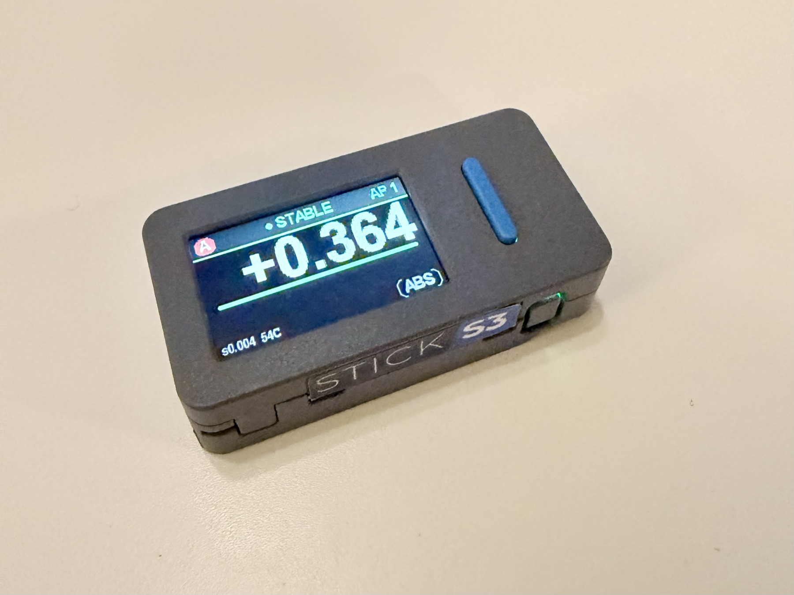
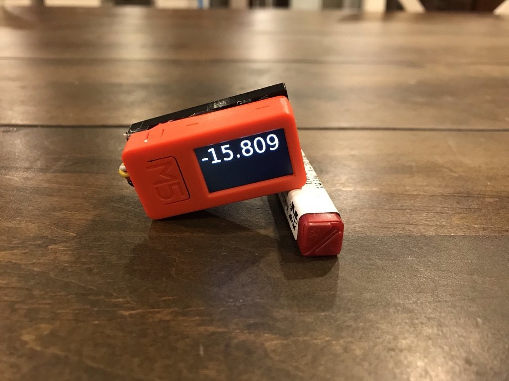
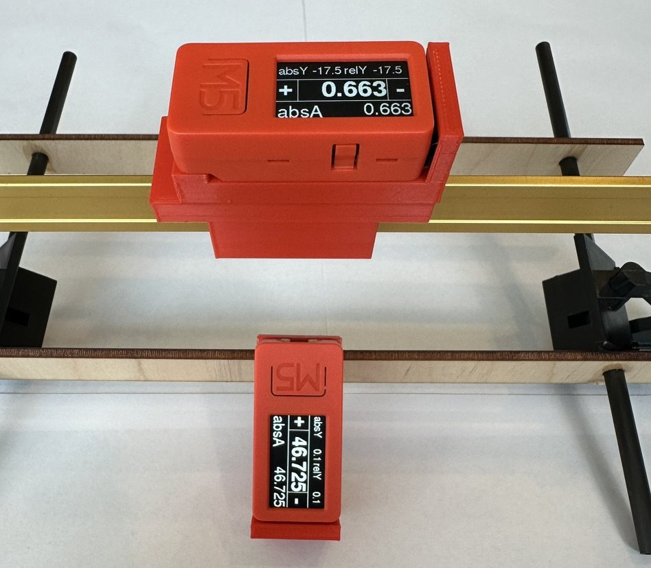
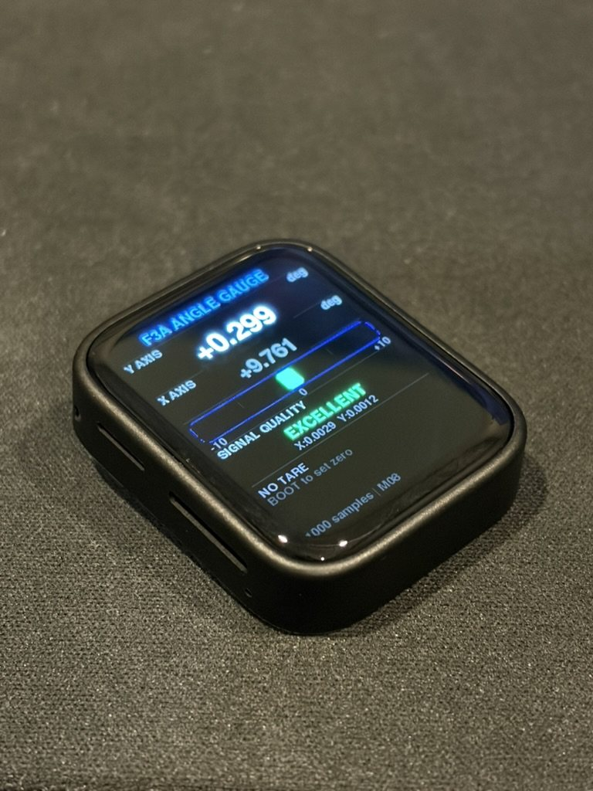
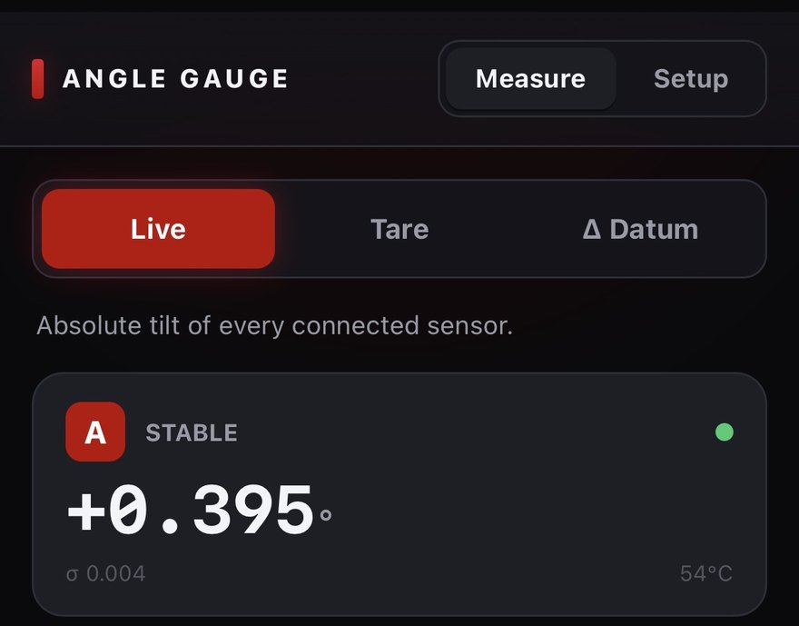

Angle Gauge
A wireless multi-node angle gauge for rigging RC aircraft. Two or more nodes clip to different surfaces and are read at the same time, measuring the angle between them rather than each one against the ground.

What it does
Rigging an RC aircraft means setting angles: wing incidence, decalage between wing and stabilizer, control-surface throws and their differential, washout, dihedral. All of these are really the angle between two things, not the angle of one thing.
The Angle Gauge is a set of small nodes that each measure their own tilt and broadcast it. Clip one to the wing and one to the stabilizer and you get the difference directly. It resolves to roughly 0.01°. For comparison, an analog Robart meter reads to 0.125° and digital angle cubes are typically ±0.2°.
If you want to try it, the firmware is on this site: flash a node from your browser.
2021 — where it started
The commercial angle gauges available at the time had two limitations: they were heavy enough to deflect the surface being measured, and their accuracy was about 0.2°. That is adequate for setting a control throw. It is not adequate for decalage, where differences of a tenth of a degree matter.
The first version used an M5StickC, chosen because it already included a battery, a screen, and a built-in IMU.
The built-in IMU was not accurate enough. The figures below show why.
The M5StickC carries an InvenSense MPU-6886. The part I moved to was an Analog Devices ADXL355 — a dedicated low-noise, low-drift accelerometer rather than a general-purpose motion IMU.
| At ±2 g | MPU-6886 (built in) | ADXL355 | |
|---|---|---|---|
| Resolution | 16-bit — 61 µg/LSB | 20-bit — 3.8 µg/LSB | 16× |
| …as tilt | 0.0035° per count | 0.00022° per count | 16× |
| Noise density | 100 µg/√Hz (170 max) | 22.5 µg/√Hz | 4.4× |
| …as tilt at 1 Hz | 0.0057° RMS | 0.0013° RMS | 4.4× |
| Offset drift | ±0.5 mg/°C — 0.029°/°C | ±0.1 mg/°C — 0.0057°/°C | 5× |
| Nonlinearity | ±0.3% typ | 0.1% | 3× |
Offset drift is the specification that mattered. The MPU-6886's zero-g point moves ±0.5 mg/°C, or 0.029° of apparent tilt per °C. The full 0.01° budget is consumed by 0.35 °C of temperature change. The ADXL355 allows about 1.75 °C for the same budget.
Resolution appeared to be a second limitation, but is not one. Sixteen bits across ±2 g give one count per 61 µg, or 0.0035° — about three counts across the 0.01° target, against 46 counts for the ADXL355's twenty bits. Because the sensor's noise is larger than one count, it dithers the quantizer, and averaging recovers resolution below a single LSB.
Noise is not a limit either, for the same reason: it averages down as 1/√N, so a few seconds of stillness reduces it as far as required. Offset drift does not average down, and averaging over a longer window increases the error it contributes.

The prototype met the accuracy target. It was a single node showing a single absolute angle, so it could not measure the angle between two surfaces.
2024 — making it buildable by others
The next version kept the M5StickC and the ADXL355 and addressed a different problem: making the design something other people could assemble.
It was not much easier to build. It still required a significant amount of external wiring and a 3D-printed enclosure. I built a small number and handed them out to people in the community for feedback.
The feedback was positive and people asked for units, but each one had to be assembled by hand. At that point the limiting factor was no longer accuracy but reproducibility.

2025 — the WaveShare platform
Since the external accelerometer was the main assembly burden, the next step was to look for a development platform whose built-in IMU was accurate enough to use directly. That led to a WaveShare board carrying a QST QMI8658.
Compared with the part it would replace:
| At ±2 g | ADXL355 (external) | QMI8658A (built in) |
|---|---|---|
| Resolution | 20-bit — 3.8 µg/LSB | 16-bit — 61 µg/LSB |
| Noise density | 22.5 µg/√Hz | 150 µg/√Hz |
| …as tilt at 1 Hz | 0.0013° RMS | 0.0086° RMS |
| …after a few seconds | ~0.0004° | ~0.003° |
| Offset drift | ±0.1 mg/°C — 0.0057°/°C | ±1 mg/°C — 0.057°/°C |
| Nonlinearity | 0.1% | ±0.75% |
The QMI8658 is worse than the ADXL355 on every specification listed: 6.7× the noise density, 10× the offset drift, and four fewer bits of resolution. In use it was still sufficient. The ADXL355 build was stable to about 0.001°; the QMI8658 varied by a few thousandths of a degree. Against a 0.01° target, that leaves margin.

The platform had drawbacks. It is a touchscreen development board, larger and heavier than the application requires, and it has no battery, so it still needed a custom enclosure and a battery added to it.
This generation is where the rest of the system started. Multiple nodes were made to communicate using ESP-NOW and BLE, and the nodes first served a web page that could be opened on a phone. Both carried over to the current version.
2026 — M5StickS3
In January 2026, M5 released the M5StickS3. It has the battery, screen, and case size of the original StickC, with a Bosch BMI270 in place of the MPU-6886.
Offset drift for all four parts:
| Part | Used in | Offset drift | …as tilt |
|---|---|---|---|
| MPU-6886 | 2021, rejected | ±0.5 mg/°C | 0.029°/°C |
| ADXL355 | 2021–24, external | ±0.1 mg/°C | 0.0057°/°C |
| QMI8658A | 2025, WaveShare | ±1 mg/°C | 0.057°/°C |
| BMI270 | 2026, current | ±0.25 mg/°C | 0.014°/°C |
The BMI270's noise density is similar to the QMI8658's — 160 against 150 µg/√Hz — and its offset drift is four times lower, and twice as low as the MPU-6886's. With the re-zeroing workflow described below, that is sufficient, and no external accelerometer is required.
Version 1.0 uses the M5StickS3 with no added hardware. The firmware can be installed from this site: flash a node from your browser. The rest of these notes describe how that version works.
Measuring the angle
Tilt comes from the accelerometer only — an atan2 of two axes, using gravity as
the reference. No gyro integration, so there's nothing to drift over a session.
A useful property of that approach is constant angular sensitivity: the resolution is the same at every angle. A 40° control throw resolves just as well as a 0.5° incidence setting, which matters because the same tool has to do both jobs.
Getting to 0.01°
A single accelerometer sample is far noisier than 0.01°, so the number has to come from averaging. Averaging introduces lag: a heavily filtered reading is precise but takes seconds to catch up, so the display trails the surface while it is being moved.
The compromise is to switch behavior based on whether the surface is moving:
- Moving — a fast filter (τ ≈ 0.1 s) drives the display, so it follows the movement.
- Stopped — the accumulator resets and starts averaging fresh samples. Precision improves as 1/√N with no settling lag, because nothing stale is carried over: roughly 0.005° after 2 seconds, 0.002° after 8.
Averaging is capped near the Allan-deviation minimum. Past that point drift starts to
dominate and longer averaging makes the reading worse, not better. A
MOVING → SETTLING → STABLE state machine drives the display, the auto-capture,
and the audio chirps.
Why two nodes
Each node measures its tilt against gravity, so each reading includes however the fuselage happens to be sitting. Subtract two of them and that shared component cancels out — it's common-mode. The practical consequence is that the aircraft does not need to be leveled before measuring.
What doesn't cancel is each node's own fixed offset, and in differential work that becomes the dominant error. A pair-zero step handles it: sit both nodes on one flat surface and zero them together, which measures the offset between them and removes it.
node A on the wing ──► tilt_A = wing angle + fuselage attitude
node B on the stabilizer ──► tilt_B = stab angle + fuselage attitude
─────────────────────────────────────────
A − B = decalage (attitude cancels)
How the nodes talk
The nodes use an ESP-NOW broadcast mesh. Each one beacons its angle, sigma, state, and temperature at 10 Hz to the broadcast address and passively listens for everyone else. There's no pairing, no hub, and no connection state to manage — any node can display the delta against any other, and no phone needs to be present.
Roles are sticky. The first node to boot claims A, the next claims B, and so on, with the choice persisted to NVS. Without this, a brownout mid-session could renumber the sensors and change which surface each reading refers to. Collisions are settled by MAC address, and the startup listen window is 2.5 s and non-blocking.
The web console
Long-pressing any node turns it into an access point with a web server at
192.168.4.1, serving a single self-contained HTML file from LittleFS. It's
on-demand rather than always-on.
Captive-portal probes are answered with success pages, which keeps iOS in Safari rather than the captive-portal browser and allows Add to Home Screen. A BLE web app was the alternative, but Web Bluetooth is not available on iOS, so SoftAP was used instead.
It settled into two views. Measure has three modes: Live shows the absolute tilt of every connected sensor, Tare zeroes them, and Δ Datum reads the difference against a chosen reference. Most rigging measurements are a combination of those three, so an earlier and larger menu of named measurements was reduced to them.

Setup holds the less frequently used controls. Calibration has Match 0, which zeroes every unit together — the pair-zero step described above. Below it are the thresholds that drive the state machine: how much movement counts as motion, how long a surface must hold still before it counts as settled, and the cap on how long to average. Those live on the node itself rather than in the browser, so a node behaves the same whether or not a phone is present.
Hardware
| Part | Detail |
|---|---|
| Node | M5StickS3 — ESP32-S3 dual-core, 1.14" LCD, speaker, 250 mAh LiPo |
| IMU | Bosch BMI270, 6-axis (accelerometer used for tilt) |
| Fleet | Two or more nodes, read simultaneously |
| Link | ESP-NOW broadcast, 10 Hz |
Alternatives considered and set aside: the QMI8658, which is noisier; the Arduino Nesso N1, which carries the same BMI270 but is single-core C6 and costs more; and the Murata SCL3400, a lower-drift sensor that the re-zeroed relative workflow makes unnecessary.
Practical notes
- Everything is in degrees.
- Zero shortly before measuring. After a cold power-on, allow about 15 minutes of warm-up.
- A node weighs about 20 g, which is enough to deflect a light surface. A ballast test will show whether it does.
- Incidence accuracy is limited by the chord-line fixture, not the electronics.
Packaging
A node needs two things installed: the app firmware and the LittleFS image holding the web console. If those are flashed as separate steps, it is possible to flash the app and omit the filesystem, in which case the console returns 404.
The build script therefore merges the bootloader, partition table, app, and filesystem into
a single 8 MB image written at offset 0x0. The same image works with a browser
flasher or with esptool.
Reflashing deliberately leaves NVS alone, so a node keeps its role, zero, and thresholds across an update rather than needing to be set up again.
Where it stands
The firmware and console are working and in use. A round of review hardening was applied afterwards: edge-latched buttons so a long press fires once and short actions land on release, routes registered a single time, a cross-core snapshot taken under a mutex for the web task, and the IMU temperature read at 1 Hz.
One item is outstanding: a two-hour static log to compute the Allan deviation, which would confirm the noise floor in the enclosure and set the averaging cap from measurement rather than estimate.